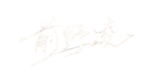

LATEST NEWS
ABOUT
AISpringFES2026 ーそれは現代最高峰のAI音楽祭
AI創作の黎明期から活躍し、実績と実力を兼ね備えたクリエイターたちを厳選。総合的な視点で選び抜かれた19名が一堂に会する、春の頂上決戦です。
私たちがこのフェスティバルに込める想いは、大きく2つあります。
【① AI創作のフラグシップを示し、未来への道筋を照らす 】
2025年末のAI紅白歌合戦のコンセプトが「全員参加」だったのに対し、AISpringFESは「少数精鋭」。各年度末にAI音楽界を牽引するクリエイターにスポットを当て、今ここにある進化とこれから来る未来を提示します。商業レベルのMV・楽曲が次々と生まれ、もはや実験段階を超えたAI音楽の“現在地”を、肌で感じていただける5時間半をお届けします。
【② AIクリエイターが正当な対価を得られる「持続可能な文化」を築く】
素晴らしい作品を生み出すクリエイターたちが、多大な時間と情熱を注ぎながらも、その価値が適切に還元されにくい現状を変えていきたいと考えています。
そこで本イベントでは、公式グッズ販売を「新しいクリエイター経済圏構築」の第一歩として位置づけています。売上は全て運営費に充て、透明性のある収支公開も行います。将来的に、AIクリエイター一人ひとりがオリジナルグッズを安心して展開し、対価が還元される流れを広げていく——そんな文化の礎を、少しずつ築いていきます。
AIイベント運営会社代表
前野 凌
前野 凌
